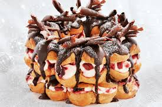
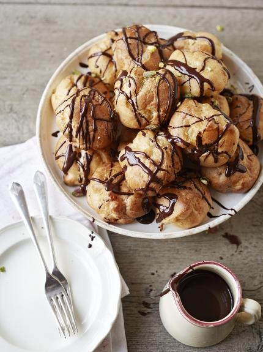

Best French dessert Profiteroles
We decided to share one easy home making recipe as a gift to your loyalty. Crispy hollow choux pastry balls filled with custard or cream then drizzled with chocolate, these are a terrific small-bite dessert option for gatherings.The pastry shells can be made days, even months in advance. And one batch makes almost 50 profiteroles!!

Everyone raves about these chocolate and caramel candies. I received the recipe from a friend while liI'm one of those people who need chocolate on a regular basis. I looked high and low for a rich brownie recipe that called for cocoa instead of chocolate squares...and this is it.
-Karen Trapp, Paris
How to make Profiteroles
- Buy ingredients
- Sugar
- Eggs
- Vanilla extract
- Butter
- Flour
- Baking cocoa
- Baking powder
- Salt
-
- Make frosting
- frosting / noun. - soft icing based on sugar and egg whites.Thats thick, fluffy mixture that is used to decorate our cakes and cupcakes. It is the stuff that holds shape on your cakes and looks pretty in various designs.
Reqired ingredients for frosting
- Baking cocoa
- Melted butter
- Warm water
- Coffee
- Confectioners sugar
- Directions
Do it step by step!
- Step I
- Preheat oven to 350°. In a large bowl, beat the sugar, eggs and vanilla. Beat in butter. Combine:
- Flour
- Cocoa
- Baking powder
- Salt
gradually add to batter and mix well.
- Step II
- Pour into a greased 8-in. square baking dish. Bake until a toothpick inserted in the center comes out clean, 25-30 minutes. Cool on a wire rack.
- Step III
- For frosting, combine the cocoa and butter. Combine the water and coffee granules; add to cocoa mixture. Stir in sugar until smooth. Frost brownies.

- Nutrition Facts
1 brownie: 232 calories, 12g fat (6g saturated fat), 37mg cholesterol, 136mg sodium, 30g carbohydrate (21g sugars, 1g fiber), 4g protein.
For more home-made french desserts go here.
↑Back to top↑
→Tamara Najdovska©←